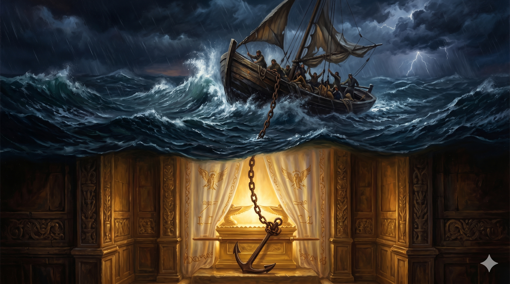

모리아 산정의 새벽, 한 줄기 햇빛이 제단 위로 길게 떨어진다. 늙은 아브라함이 무릎을 꿇고 두 손을 들어 올린 그 위에, 하늘로부터 내려온 황금빛 한 줄이 그의 가슴 한가운데로 곧게 박혀 든다 — 마치 거대한 닻이 영혼의 가장 깊은 자리에 내려앉듯. 산 너머 푸른 새벽바람이 거룩하게 일렁이고, 한 노인의 떨리는 어깨 위로 변할 수 없는 한 분의 맹세가 무겁고도 따뜻하게 얹힌다.
하나님이 아브라함에게 약속하실 때에 가리켜 맹세할 자가 자기보다 더 큰 이가 없으므로 자기를 가리켜 맹세하여 이르시되 내가 반드시 너에게 복 주고 복 주며 너를 번성하게 하고 번성하게 하리라 하셨더니 … 하나님은 약속을 기업으로 받는 자들에게 그 뜻이 변하지 아니함을 충분히 나타내시려고 그 일에 맹세로 보증하셨나니 이는 하나님이 거짓말을 하실 수 없는 이 두 가지 변하지 못할 사실로 말미암아 앞에 있는 소망을 얻으려고 피난처를 찾은 우리에게 큰 안위를 받게 하려 하심이라 우리가 이 소망을 가지고 있는 것은 영혼의 닻 같아서 안전하고 견고하여 휘장 안에 들어 가나니 — 히브리서 6:13–14, 17–19
하나님은 처음 아브라함을 부르실 때 한 가지 "약속"으로 그를 묶으셨습니다(창 12:1–3). 그러나 모리아 산을 통과한 후, 하나님은 한 걸음 더 나아가십니다 — 그 약속에 "맹세"를 더하십니다(창 22:16). "내가 나를 가리켜 맹세하노니." 사람은 자기보다 더 큰 자를 가리켜 맹세합니다. 그러나 하나님은 자기보다 더 큰 자가 없으시므로, 자기 자신을 걸고 맹세하셨습니다. 약속만으로도 충분한 그분이, 굳이 맹세까지 더하신 이유는 무엇입니까. 히브리서는 이렇게 답합니다. "그 일에 맹세로 보증하셨나니, 이는 약속을 기업으로 받는 자들에게 그 뜻이 변하지 아니함을 충분히 나타내시려고"(히 6:17). 곧 약속에 맹세를 얹으신 것은 하나님 자신을 위한 일이 아니라, 흔들리는 우리를 위한 한 번 더의 보증이었습니다. 우리의 작은 가슴이 그분의 약속만으로는 마음 놓지 못할 것을 아셨기에, 그분은 자기 이름을 한 번 더 우리 앞에 내려놓아 주셨습니다.
히브리서는 이 이중의 보증을 가리켜 "거짓말을 하실 수 없는 두 가지 변하지 못할 사실"이라 부릅니다(히 6:18) — 하나님의 약속, 그리고 하나님의 맹세. 그리고 이 두 줄 위에 한 단어가 떠오릅니다 — "닻." "우리가 이 소망을 가지고 있는 것은 영혼의 닻 같아서 안전하고 견고하여 휘장 안에 들어가나니"(히 6:19). 광야의 노인을 향해 떨어진 그 한 마디가, 사천 년 후 풍랑에 흔들리는 한 영혼의 가장 깊은 자리에 닻이 되어 박혀 듭니다. 더욱 놀라운 것은 그 닻줄이 어디에 매여 있느냐 하는 것입니다 — "휘장 안에." 곧 가장 거룩한 곳, 하나님의 임재 자체에 매여 있다는 뜻입니다. 그러므로 우리의 신앙의 안정은 우리의 힘에 달려 있지 않습니다. 그것은 보이지 않는 가장 깊은 곳에 이미 박혀 있는 한 닻 — 그리스도이신 닻 — 그 위에 달려 있습니다. 풍랑은 갑판을 흔들어도 닻을 뽑을 수 없습니다. 닻이 박힌 그 자리는 우리가 보지 못하는 곳, 그러나 결코 흔들리지 않는 곳입니다.

짙은 풍랑이 일렁이는 어두운 바다 위, 작은 한 척의 배가 거센 파도 사이에서 흔들린다. 그러나 그 배에서 내려간 한 가닥 닻줄은 깊은 물속을 지나 빛나는 휘장 안 — 거룩한 성소의 한가운데로 곧게 이어져 있다. 폭풍은 갑판을 때리지만, 닻줄은 결코 풀리지 않는 손에 단단히 매여 있다.
우리의 신앙이 흔들리는 이유는 약속이 약해서가 아니라, 우리의 마음이 작기 때문입니다. 그래서 하나님은 약속만으로 충분하신 분이심에도 불구하고, 우리에게 한 번 더 — 맹세까지 — 보증해 주셨습니다. 오늘 당신의 마음이 한 줄의 말씀만으로 잠잠해지지 않을 때, 그 위에 얹힌 또 한 줄을 기억하십시오. "여호와께서 이르시되 내가 나를 가리켜 맹세하노니." 그분은 흔들리는 당신의 어깨 위에 그분 자신의 이름까지 얹어 주신 분입니다. 그러므로 당신의 신앙의 견고함은 당신의 확신의 강도가 아니라, 그 약속을 주신 분의 신실하심에 매여 있습니다. 오늘 당신이 마음이 약해질 때마다 입술로 한 번 천천히 말해 보십시오 — "하나님은 거짓말을 하실 수 없는 분이시다." 이 한 줄이 당신의 가슴 안쪽 가장 깊은 자리에 한 번 더 닻을 박아 줄 것입니다.
또 하나 — 닻은 우리가 보는 곳에 박히지 않습니다. 닻은 항상 우리가 보지 못하는 깊은 물속에 박힙니다. 곧 우리의 신앙의 가장 견고한 부분은 우리가 직접 손으로 만질 수 있는 곳에 있지 않습니다. 그것은 휘장 안 — 우리 눈으로는 보이지 않는 가장 거룩한 곳에 있는 한 분 — 우리를 위해 먼저 들어가신 그리스도(히 6:20)에게 매여 있습니다. 그러므로 오늘 당신이 자신의 신앙을 보고 흔들릴 때, 시선의 방향을 바꾸십시오. 갑판이 아니라 닻줄을, 닻줄이 아니라 닻이 박힌 그 깊은 자리를 보십시오. 그리고 그 자리에 누가 서 계신지를 보십시오 — 당신을 위해 먼저 휘장 안으로 들어가신 영원한 대제사장. 그분이 거기 서 계시는 한, 풍랑은 결코 당신의 영혼을 떼어놓을 수 없습니다.
하나님은 약속만 주신 분이 아닙니다 — 그 약속 위에 자기 이름을 걸어 주신 분입니다.
당신의 신앙의 닻은 갑판 위가 아니라 휘장 안에 박혀 있습니다.
오늘, 풍랑이 칠 때 닻줄 끝에 서 계신 그분의 얼굴을 다시 보십시오.